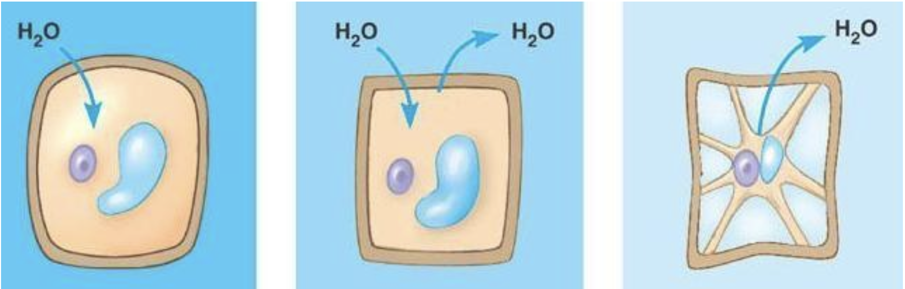
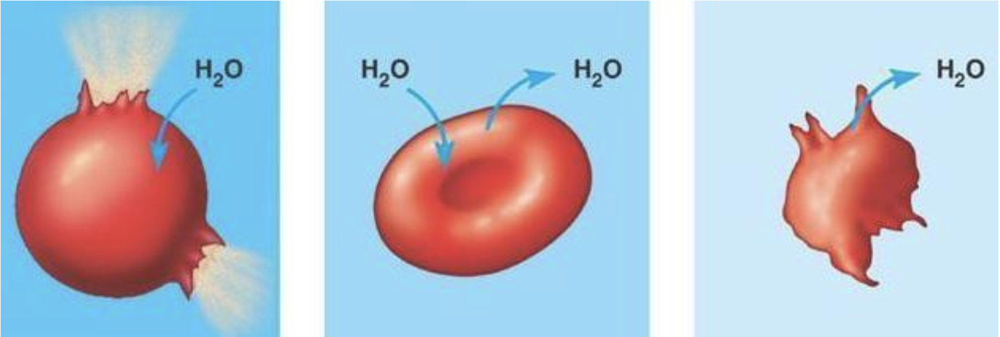

Movement in and out of cells
Author: Ms. Joey Lie (EI)
Materials may pass in and out of cells by:
- diffusion
- osmosis
- active transport
Diffusion
- mixing molecules
- the net movement of molecules within a gas or liquid
- from region of high concentration to a region of lower concentration (down a concentration gradient)
- as a result of their random movement
- until an equilibrium is reached
- living organisms have certain adaptations to speed up diffusion:
- diffusion distances are short - the membranes in the lungs are very thin so that oxygen and carbon dioxide can diffuse between the blood and the lung air spaces.
- concentration gradients are maintained – glucose molecules that cross from the gut into the blood for example, are quickly removed by the circulating blood so that their concentration does not build up and equilibrium is not reached.
- diffusion surfaces are large - the highly folded surface of placenta increase the surface area for the diffusion between pregnant women and developing fetus in her uterus.
Osmosis
- the diffusion of water molecules
- from region of higher water potential to region of lower water potential (down a water potential gradient)
- through partially permeable membrane (only allow certain particles to pass through)
- cell and osmosis :
Plant Cells & Osmosis
- cell in solution of higher water potential – water enters by osmosis. The cytoplasm pushes hard against the cell wall and the cell becomes turgid (firm).
- cell in solution of equal water potential – no net movement of water, cytoplasm just presses against cell wall.
- cell in lower water potential – water leaves by osmosis. The cytoplasm shrinks and stop pushing outwards on the cell wall. The cell becomes flaccid (floppy).
If the solution is very concentrated, the cytoplasm and vacuole go on shrinking. The cell wall is too stiff to be able to shrink much. The cytoplasm shrinks further and further into the centre of the cell, the cell wall gets left behind.The cell membrane, surrounding the cytoplasm, tears away from the cell wall and the cell is said to be plasmolysed.
animal cell and osmosis :
- in a solution of higher water potential – the cell takes in water, swells and bursts (haemolysis)
- in a solution of same water potential – the cell is in equillibrium
- in a solution of lower water potential – the cell loses water, shrinks and becomes crenated.
Active transport
- the movement of molecules and ions in or out of a cell through the cell membrane against a concentration gradient, using energy from respiration.
- Energy is needed to produce the shape change in the transport protein.
- examples
- Root hair cells in plants take in nitrate ions from the soil.
- The concentration of nitrate ions inside the root hair cell is higher than the concentration in the soil. The root hair cell is still able to take nitrate ions in by active transport. In the cell membrane of the root hair cells are special transport protein which pick up nitrate ions from outside, and then change shape in such a way that they push the nitrate ions through the cell membrane and into the cytoplasm of the cell. Energy provided by respiration is needed to produce the shape change in the transport protein.
- In the human small intestine, glucose can be actively transported from the lumen of the intestine into the cells of the villi.
- In kidney tubules, glucose is actively transported out of the tubule and into the blood.(reabsorption of glucose)
- Root hair cells in plants take in nitrate ions from the soil.